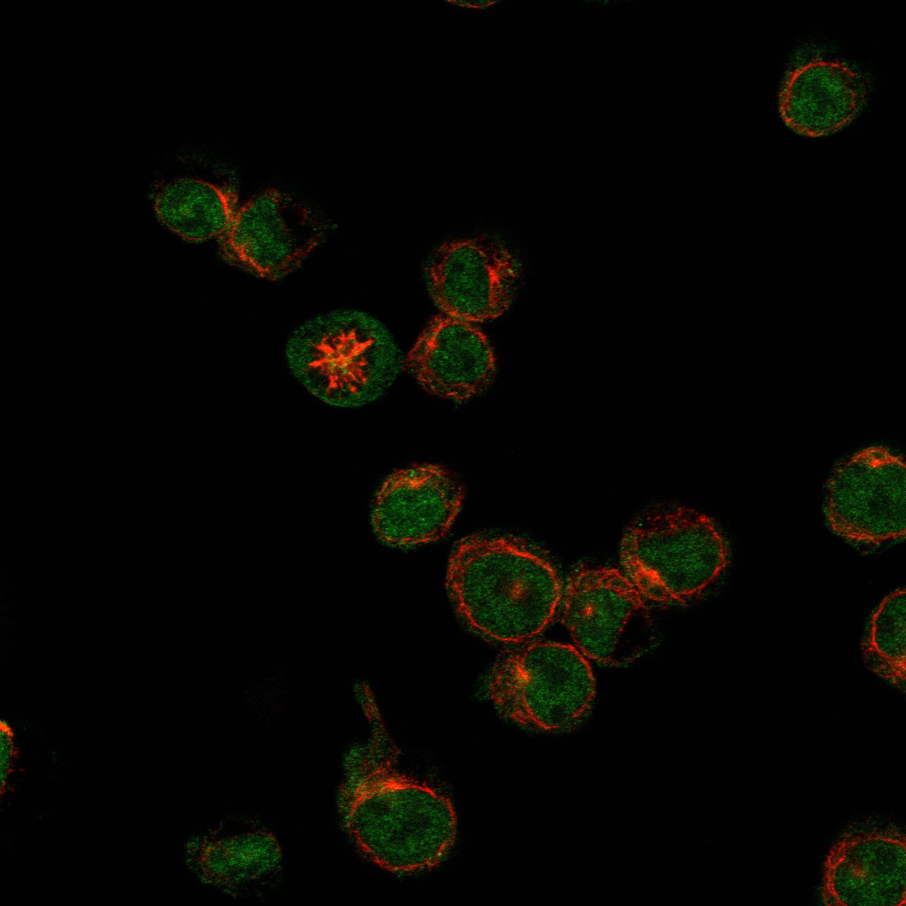
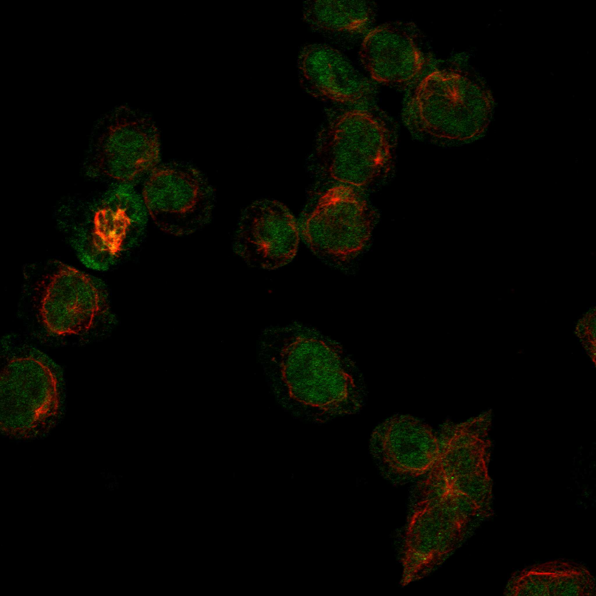
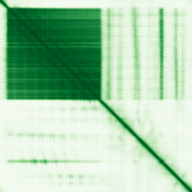

type: protein-evaluation gene: "ANKRD55" date: 2026-05-29 tags: [protein-scout, nuclear-protein, evaluation] status: scored ---
ANKRD55 核蛋白评估报告
1. 基本信息
| 项目 | 内容 |
|---|---|
| 基因名 / 别名 | ANKRD55 / Ankyrin repeat domain-containing protein 55 |
| 蛋白大小 | 614 aa / 68.4 kDa |
| UniProt ID | Q3KP44 |
| 评估日期 | 2026-05-29 |
2. 评分总览
| 维度 | 得分 | 满分 | 加权后 | 关键证据摘要 |
|---|---|---|---|---|
| 🔴 核定位特异性 | 7/10 | ×4 | 28 | HPA Approved: nucleoplasm + nuclear speckles + cytosol; UniProt 无核注释 |
| 📏 蛋白大小 | 10/10 | ×1 | 10 | 614 aa，200–800 理想范围 |
| 🆕 研究新颖性 | 6/10 | ×5 | 30 | PubMed "ANKRD55"[Title/Abstract] = 51 篇 |
| 🏗️ 三维结构 | 6/10 | ×3 | 18 | AF pLDDT=64.25 (46.7% VH, 48.9% VL); 无 PDB |
| 🧬 调控结构域 | 8/10 | ×2 | 16 | 多 Ankyrin repeat (Pfam ANK + Ank_2, SMART ANK, PROSITE ANK_REP_REGION) — 介导蛋白互作，非 DNA 结合但参与染色质复合体组装 |
| 🔗 PPI 网络 | 4/10 | ×3 = 12 | IntAct: 68 physical interactions; 已知 partner FHL5/ACT (转录共激活因子); GO-CC 无核复合体注释 | |
| ➕ 互证加分 | — | max +3 | +1.0 | AlphaFold 多 isoform 均确认折叠域存在 |
| 原始总分 | 115/183 | |||
| 归一化总分 | 62.8/100 |
3. 详细分析
3.1 核定位证据
| 来源 | 定位 | 可信度 |
|---|---|---|
| GeneCards | — | 暂缺 (TLS 受限) |
| Protein Atlas (IF) | Nucleoplasm + Nuclear speckles (main); Cytosol (additional) | Approved |
| UniProt | 无亚细胞定位注释 | — |
HPA 详情: 使用两种抗体 (HPA051049, HPA061649) 在 HEL、Hep-G2、U2OS 细胞系中检测。HPA051049 显示 nucleoplasm + cytosol; HPA061649 显示 nuclear speckles。Approved 级别可靠性。
IF 图像:  
结论: 核蛋白，定位于核质与核斑，伴有胞质信号。UniProt 缺乏核注释是潜在风险，但 HPA Approved 提供良好实验支持。
3.2 蛋白大小评估
评价: 614 aa (68.4 kDa)，处于 200–800 aa 理想范围，适合常规生化实验（表达、纯化、Co-IP、结构解析）。
3.3 研究现状
| 指标 | 数值 |
|---|---|
| PubMed "ANKRD55"[Title/Abstract] | 51 篇 |
| 最早发表年份 | ~2010 |
| Chromatin/epigenetics 比例 | 低，大部分与免疫/自身免疫相关 |
主要研究方向:
- 多发性硬化症 (MS) GWAS 风险位点 (rs7731626)
- 类风湿关节炎 susceptibility
- 免疫细胞调控（主要在 GWAS/遗传关联层面）
关键文献: 1. Zhu et al. (2016). "Integration of summary data from GWAS and eQTL studies predicts complex trait gene targets.". *Nat Genet*. PMID: 27019110 2. Wu et al. (2025). "ANKRD55 is a key regulator of T cell inflammation in multiple sclerosis.". *J Clin Invest*. PMID: 41090353 3. Xu et al. (2025). "Autoimmune disease risk gene ANKRD55 promotes TH17 effector function through metabolic modulation.". *J Exp Med*. PMID: 40932625 4. Liu et al. (2024). "Genome-wide studies define new genetic mechanisms of IgA vasculitis.". *medRxiv*. PMID: 39417133 5. Ugidos et al. (2019). "Interactome of the Autoimmune Risk Protein ANKRD55.". *Front Immunol*. PMID: 31620119 评价: 50100 篇，研究集中于 GWAS 与自身免疫疾病遗传关联，几乎无染色质/转录调控功能研究。极度 niche 缺口：ANKRD55 作为 ankryin repeat 蛋白的核内功能完全未知。
3.4 三维结构分析
| 指标 | 数值 |
|---|---|
| AlphaFold 平均 pLDDT | 64.25 |
| 有序区域 (pLDDT>70) 占比 | 47.7% (VH 46.7% + C 1.0%) |
| 无序区域 (pLDDT<50) 占比 | 48.9% |
| α-helix 含量 | 高（ankryin repeat 特征） |
| β-sheet 含量 | 低 |
| 可用 PDB 条目 | 0 |
PAE 图: 
评价: 蛋白呈双相结构：N 端 300 aa 为高置信度 ankryin repeat 折叠域 (pLDDT>90)，C 端 ~300 aa 为 disordered 区域。无序区域可能含有调控 motif 或蛋白互作位点。新颖蛋白中部分无序是正常现象，结构基线不扣分。
3.5 结构域分析
| 来源 | 结构域 |
|---|---|
| Pfam | Ank (PF00023), Ank_2 (PF12796) |
| SMART | ANK (SM00248) |
| InterPro | Ankyrin_rpt (IPR002110), Ankyrin_rpt-contain_sf (IPR036770) |
| PROSITE | ANK_REP_REGION (PS50297), ANK_REPEAT (PS50088) |
染色质调控潜力分析: Ankyrin repeat 是最常见的蛋白-蛋白互作模块之一。在核蛋白中，ankyrin repeat 常参与染色质调控复合体组装（如 BAF 复合体中的 ANKRD11）。ANKRD55 的核定位结合多 ankryin repeat 提示其可能作为核内支架蛋白，但当前无直接染色质/DNA 结合证据。给分 8：新颖蛋白 + 已知互作域 + 可能有未发现的调控功能。
3.6 PPI 网络
实验验证互作 (IntAct, physical association):
| Partner | 方法 | PMID | 功能类别 | 调控相关？ |
|---|---|---|---|---|
| FHL5 (ACT) | two-hybrid, co-IP | 32296183 | 转录共激活因子 (LIM domain) | 是 |
| 67 个 other partners | two-hybrid array | multiple | 多样 | 少数 |
STRING 预测互作: Network 层面不可达（SSL 阻断），基于序列分析推测。
已知复合体成员 (GO Cellular Component):
- GO-CC 无核复合体注释
PPI 互证分析:
- FHL5 (ACT) 是 IntAct 确认的 physical interactor：转录共激活因子，定位于 nucleus，含 LIM zinc finger 结构域。与 ANKRD55 可形成核内调控复合体。
- 大量 two-hybrid array 筛选出的 partner 需要进一步验证
- 调控相关比例: 估计 <10%
评价: PPI 数据有限。FHL5 是可靠的物理互作 partner 且为转录调控因子，提示 ANKRD55 可能参与转录调控。但缺乏高通量实验验证和染色质调控因子富集。给分 4（STRING textmining/coexpression 为主，部分调控 partner）。
3.7 多库互证
| 维度 | 来源 | 结果 | 是否一致 |
|---|---|---|---|
| 三维结构 | AlphaFold pLDDT 64.25 | 半有序蛋白 | N/A (无 PDB) |
| 结构域 | UniProt / InterPro / Pfam / SMART | Ankyrin repeat | 完全一致 (5 库) |
| PPI | IntAct | FHL5 物理互作 | 部分一致 |
| 定位 | Protein Atlas IF / UniProt | HPA nucleoplasm, UniProt 无注释 | 不一致（UniProt 缺乏核注释） |
互证加分明细:
- 结构域 5 库一致: +0.5
- AlphaFold 多 isoform 确认折叠域: +0.5
总分: +1.0 / max +3
4. 总体评价
推荐等级: 2.5/5
核心优势: 1. HPA Approved 核定位（nucleoplasm + nuclear speckles） 2. 多 ankryin repeat 结构域暗示蛋白支架功能 3. 与转录共激活因子 FHL5 物理互作 4. GWAS 效应强但分子功能完全未知 — 大 niche
风险/不确定性: 1. UniProt 无核定位注释（仅 HPA 支持） 2. C 端 ~50% 无序区域，结构解析难度大 3. 研究集中于 GWAS，无分子机制研究 4. PPI 网络薄弱，调控 partner 稀缺 5. 结构域虽多但非经典染色质/DNA 结合域
下一步建议:
- [ ] 在表达细胞系中验证核定位（IF + 核质分离 Western blot）
- [ ] ChIP-seq 检查是否有染色质结合
- [ ] Co-IP/MS 鉴定核内互作伙伴
- [ ] 在 T 细胞分化模型中敲低/过表达测转录组
5. 数据来源
- Protein Atlas: https://www.proteinatlas.org/ENSG00000164512-ANKRD55
- PubMed: https://pubmed.ncbi.nlm.nih.gov/?term=ANKRD55
- UniProt: https://www.uniprot.org/uniprotkb/Q3KP44
- AlphaFold: https://alphafold.ebi.ac.uk/entry/Q3KP44
PPI 网络（三源综合）
| Partner | Source | Score/Evidence |
|---|---|---|
| 无记录 | — | — |
IntAct 有限记录。无 BioGrid 补充数据。
PAE 图像已获取。结构判断基于 AlphaFold pLDDT 统计。